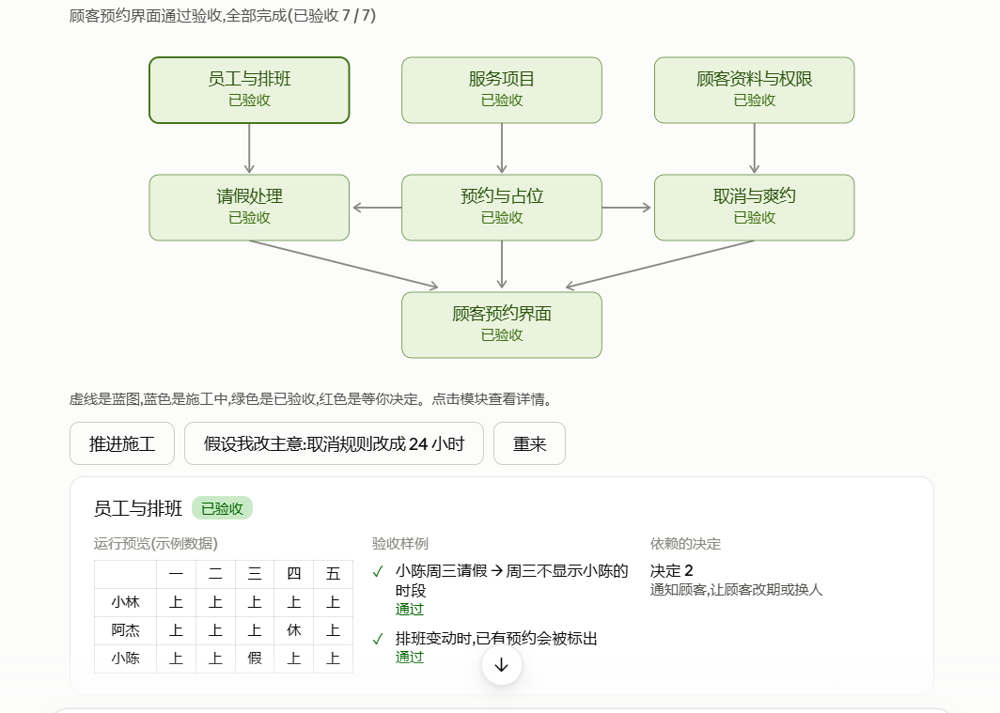
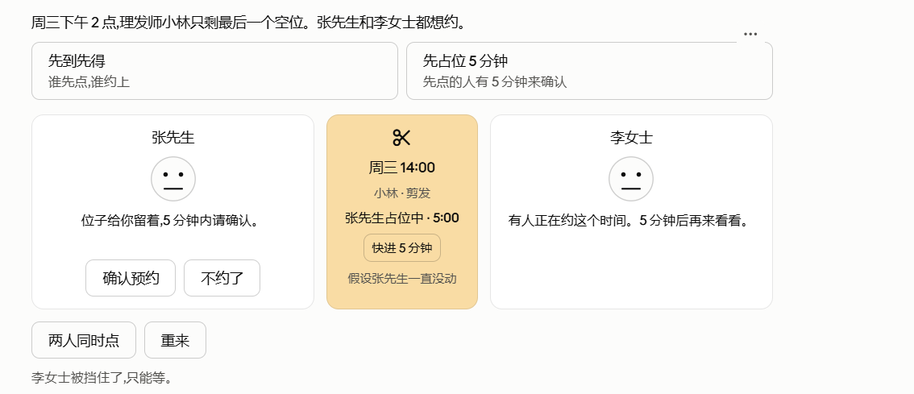
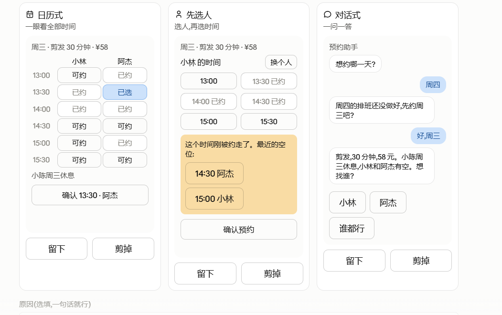

预约系统的规则，不该只躺在需求文档里
当两个人争同一个时段时，人可以亲手比较“先到先得”和“占位五分钟”的后果：谁等待、谁确认、超时后发生什么。还没写完整业务代码，真正的取舍已经能被看见。
一套从真实试玩里长出来的 AI 编程方法
很多人不是不会提需求，而是在还没看见东西之前，根本无从知道自己要什么。这套方法先把可能的成果做成能看、能玩、能比较的小样，再让人的判断慢慢把 AI 的生成范围收拢。
传统编程里，程序员通常知道代码会长成什么样；但普通人在使用 AI 编程时，经常只能先给一句模糊愿望，然后等到成品出现才第一次发现：原来自己在意的是另一个问题。
当两个人争同一个时段时，人可以亲手比较“先到先得”和“占位五分钟”的后果：谁等待、谁确认、超时后发生什么。还没写完整业务代码，真正的取舍已经能被看见。
从三种候选里选出晶翼、流线机身和少量机械结构以后，试玩又暴露出更深的条件：光点要在外面、不能挡视线；环境不是背景布，而会改变主体的感受。



提示词 → 生成 → 成品 → 再写提示词
候选 → 体验 → 发现条件 → 受约束地继续生成
不是先做完整产品。只把当前最不确定、最影响方向的事情做得足够可见：效果、动作，或能触发后果的小情境。
人可以说“太晃”“不对劲”“这个规则让我等太久”。这些不是不专业的噪音，而是以前没有机会出现的真实条件。
AI 区分三件事：人已经决定什么、AI 暂时怎么实现、什么仍然等着下一次体验。保存的是当时的判断，不是永久封死。
下一轮不再从空白猜测。它保留已选基线，只在允许探索的地方继续，并说明哪些决定可能受到影响。
传统代码分支常常是在复制一条完整实现路径。这里的选择更像一张可组合的决策图：动作、细节、材质、微光、环境分别可以变化，但它们围绕同一个当前成果。
例如“晶翼、流线机身、少量机械结构”。这不是 AI 的默认值。
例如光晕多大、停多远。它们用来帮人判断，却不冒充人的选择。
例如花园密度和飞行范围。先开放，不假装已经定稿。
它开始于三个外形候选，随后被用户拆开重组。每一次新反馈都不是“再改一下”，而是让 AI 发现自己对目标的某个理解其实错了。

用户选了中间的通透翅膀、右边的流线机身，并要求机械结构只留一点。
“追随光点”有感觉，但玻璃反光过亮，也看不清要追的对象。
用户说的不是主体附近的小范围标记，而是场景外部的一个光点；标记反而遮挡视线。
黑背景让场景单调。用户选择晨雾花园，背景、光团和蝴蝶开始作为整体一起判断。
这些条件随后被保存成“可以引用、可以重开”的决策状态，成为后续修改的边界。
这个仓库现在把 .agents/skills/experience-to-intent 作为技能的标准来源。你不需要懂命令行：复制第一段话，发给 Codex；安装后复制第二段话，就能在任何新项目中调用它。
安装器会从标准技能目录下载完整的说明、决策状态模板和案例边界。若你把仓库克隆到本机，Codex 也会识别仓库中的 .agents/skills 目录。
这套技能适合方向、取舍和体验尚不清楚的探索型工作；明确的小修复不需要被强行套进完整流程。
什么时候先做候选，怎样记录反馈，怎样带着状态继续生成。
方法来历从“体验发现条件”到“知识向前回补”的完整逻辑。
案例边界不把机械蝶的一次体验夸大成放之四海皆准的结论。